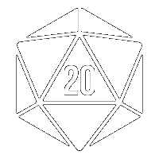
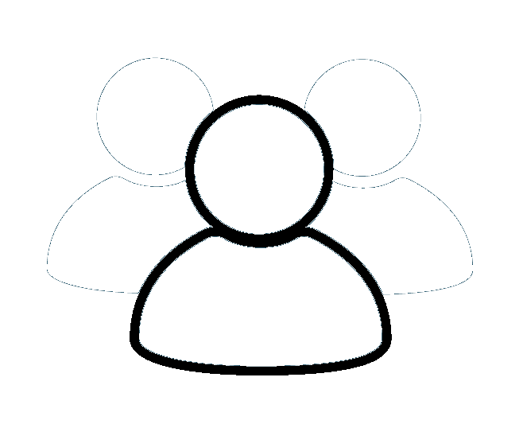
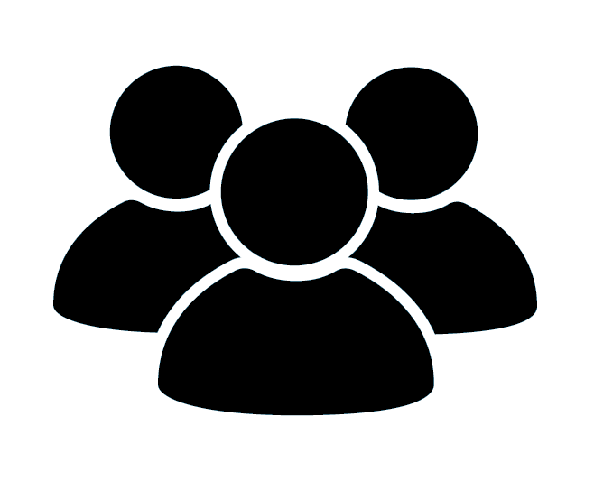

<mat-toolbar color="primary">
  <a [routerLink]="['']"><button mat-flat-button color="primary" >
    
  </button></a>
  <span>Frozen Sick</span>
  <span class="example-spacer"></span>
  <div class="desktop-options">
    <a [routerLink]="['/campanha']"><button mat-flat-button color="primary">
      
      <span>Campanha</span>
    </button></a>
    <a [routerLink]="['/characters']"><button mat-flat-button color="primary">
      
      <span>Personagens</span>
    </button></a>
    <a [routerLink]="['/monsters']"><button mat-flat-button color="primary">
      
      <span>Monstros</span>
    </button></a>
  </div>
  <div class="phone-options">
      <button mat-icon-button [matMenuTriggerFor]="menu" aria-label="Example icon-button with a menu">
          <mat-icon>more_vert</mat-icon>
        </button>
        <mat-menu #menu="matMenu">
          <button mat-menu-item class="dropdown-item"  [routerLink]="['/campanha']">
            
            <span>Campanha</span>
          </button>
          <button mat-menu-item class="dropdown-item" [routerLink]="['/characters']">
            
            <span>Personagens</span>
          </button>
          <button mat-menu-item class="dropdown-item" [routerLink]="['/monsters']">
            
            <span>Monstros</span>
          </button>
        </mat-menu>
  </div>
</mat-toolbar>
<router-outlet></router-outlet>
